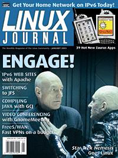

Shutdown Archive web server
Search:
Linux Journal
Issue #105/January 2003

Features
Get IPv6 Now with Freenet6
by Peter Todd
The Internet of the future wants you. Take a few minutes to plug in.
Linux and Star Trek
by Robin Rowe
Bones! The proprietary movie effects desktop! How is it? It's dead, Jim.
Zero Copy I: User-Mode Perspective
by Dragan Stancevic
Apache and Samba use the sendfile system call to speed up file serving. Here's how you can use it too.
Indepth
Compiling Java with GCJ
by Per Bothner
With the latest GCC, you can forget everything you ever knew about Java and bytecodes, and really compile it.
Apache Talking IPv6
by Ibrahim Haddad and David Gordon
Set up IPv6 access to your site now, and in 2008 you'll brag about the IPv6 web server you've had on the Net for five years.
Understand Quicksort with DDD
by Adam Monsen
Improve your mind with an elegant, historic algorithm and your productivity with a powerful GUI debugging tool.
Power Sessions with Screen
by Adam Lazur
Imagine starting a program from one remote system and resuming it from another. Imagine sharing a session with another user. You're imagining screen.
Embedded
Must-Have Zaurus Hardware and Software
by Guylhem Aznar
You've already impressed everyone with your PDA's sliding keyboard—now impress them with movies, chat and more.
Toolbox
Kernel Korner
IBM's Journaled Filesystem
by Steve Best, David Gordon and Ibrahim Haddad
At the Forge
OpenACS Templates
by Reuven M. Lerner
Cooking with Linux
When I'm Calling You...on Video
by Marcel Gagné
Paranoid Penguin
An Introduction to FreeS/WAN, Part I
by Mick Bauer
Columns
IAAL
by Lawrence Rosen
Departments
Letters
upFRONT
From the Editor
On the Web
Best of Technical Support
New Products
Archive Index
Shutdown Archive web server
Search:
Copyright © 1994 - 2018
Linux Journal
. All rights reserved.